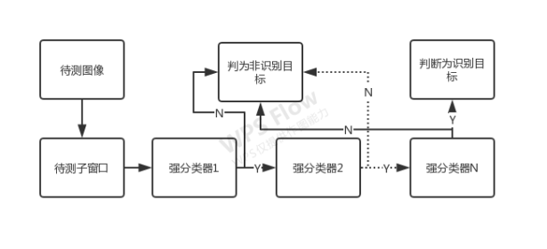
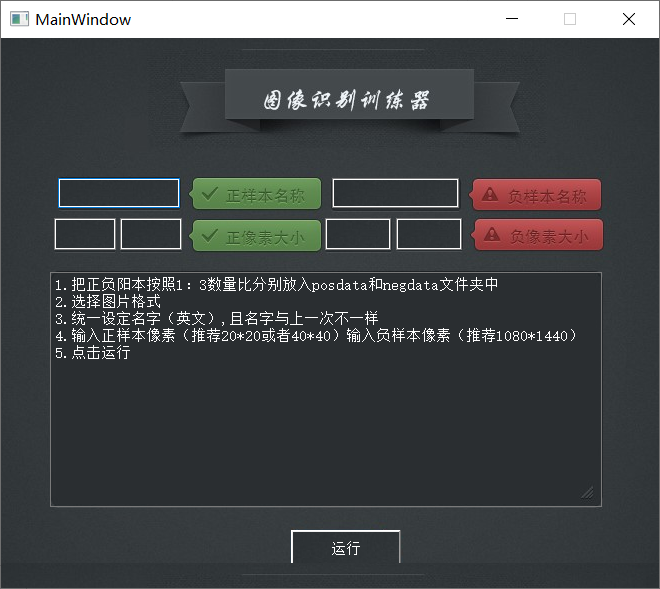
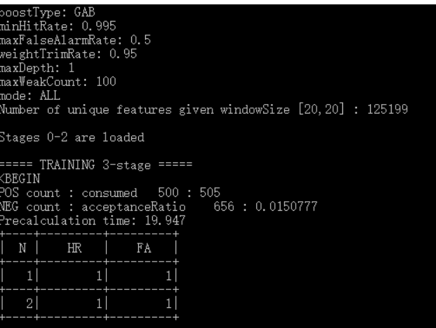
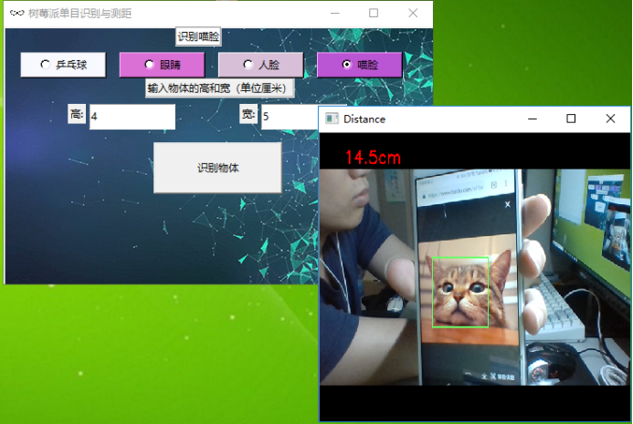
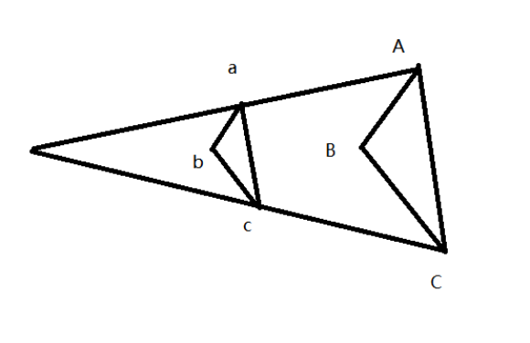

基于opencv级联分类器分类器一键式训练及单目识别测距
姓名：梁彬烽
国务院2017年7月印发的《新一代人工智能发展规划》明确指出“实施全民智能教育项目，在中小学阶段设置人工智能相关课程”，而目中小学人工智能教育的课程和教学系统仍处于起步阶段。从2017年起国内steam教育迅速发展，其中人工智能教育需要更多的教学案例。图像识别作为人工智能中的重要部分，如何让中小学生能够有兴趣并深投入到图像识别中是一个重要课题。本文以传统的Cascade分类器为原型，并进一步简化，构建成为windows系统下一键式本地化的单识别级联分类器训练器，并实现摄像头单目识别及测距。
关键词：steam教育，OpenCv，单识别分类器，一键式，casscade级联分类器
The “New Generation Artificial Intelligence Development Plan” issued by the State Council in July 2017 clearly stated that “implementing a national smart education project and setting artificial intelligence-related courses at the stage of primary and secondary schools”, and the curriculum and teaching system of artificial intelligence education for primary and secondary schools are still in their infancy stage. Since 2017, domestic steam education has developed rapidly, and artificial intelligence education requires more teaching cases. As an important part of artificial intelligence, image recognition is an important topic in how to enable primary and middle school students to be interested and deeply involved in image recognition. This article takes the traditional Cascade classifier as a prototype and further simplifies it to build a single-recognition cascade classifier trainer for the next-key localization of the Windows system, and realizes monocular recognition and ranging of the camera.
2017 年7 月,国务院下发实施《新一代人工智能发展规划》,提出把高端人才队伍建设作为人工智能发展的重中之重，坚持培养和引进相结合，完善人工智能教育体系，加强人才储备和梯队建设，特别是加快引进全球顶尖人才和青年人才，形成我国人工智能人才高地。同时提出围绕教育、医疗、养老等迫切民生需求，加快人工智能创新应用，为公众提供个性化、多元化、高品质服务。其中关于如何建设安全便捷的智能社会提出重要指导：智能教育。利用智能技术加快推动人才培养模式、教学方法改革，构建包含智能学习、交互式学习的新型教育体系[1]。随着国家对人工智能的布局，与之相关的人工智能教育迅速发展，典型的教育体系为STEAM教育。STEAM 代表科学(Science)，技术(Technology)，工程(Engineering)，艺术(Arts)，数学(Mathematics)。STEAM教育就是集科学，技术，工程，艺术，数学多学科融合的综合教育[2]。图像识别作为人工智能中的重要部分，在融入现代人工智能的STEAM教育中不可或缺。本文介绍一种对opencv自带的传统Cascade级联分类器进行简化，让用户可以简便训练单分类识别分类器。让STEAM教育工作者或者学生根据自身需求，简便的训练一个课程所需的传统单分类识别分类器。并通过一个简单案例实现单目识别与测距，为STEAM教育提供一种解决方案。
OpenCV是一款开源、高度优化、跨平台的函数库，并根据BSD 3-条款许可发布。 它是免费的可用于商业用途。它支持C ++，Python和Java开发。接口支持Linux，MacOS，Windows，iOS和Android[3]。
Opencv中集成有传统目标检测算法——级联分类器Cascade。其原理为基于AdaBoost的特征选择。由于单层识别率较低，为了提高检测的速度和精度，最终的分类器还需要通过几个强分类器级联得到。在一个级联分类系统中，对于每一个输入图片，顺序通过每个强分类器，前面的强分类器相对简单，其包含的弱分类器也相对较少，后面的强分类器逐级复杂，只有通过前面的强分类检测后的图片才能送入后面的强分类器检测，比较靠前的几级分类器可以过滤掉大部分的不合格图片，只有通过了所有强分类器检测的图片区域才是有效检测区域[4,5]。

,代表将真实正样本划分为正样本的概率，简称TPR。
，代表将真实负样本划分为正样本的概率，简称FPR。
AdaBoost所训练的强分类器一般误识率FPR较小，当多层强分类器级联时，第N层的将正样本划分为正样本的概率为TPRN，第N层的将真实负样本划分为正样本的概率为TPRN。因此可以快速排除不是正样本的图片，同时检测率较低。
1.预先选定每一层的最大可接受误检率fpr(maximum acceptable rate of fpr)和每一层最小可接受的检测率(minimum acceptable detection rate)
2.设定系统整体的可接受误检率FPRtarget
3.初始化， FPR-1, TPR = 1(检测率)
4.循环如果当前FPR> FPRtarget ,添加一层adaboost分类器,如果该分类器训练过程中没有达到该层最大误检率就继续添加新特征,添加新特征时降低闻值,使分类器的检测率大于,然后更新TPR= TPRi×TPR, FPR=FPRi×FPR
5.每一级分类器使用的训练集是上一级分类器判定正确的样本,而其中的错分的被当作负样本。这使得下一级的分类器更关注那些更难区分的样本。
Opencv中cascade级联分类器使用的配置环境为windows7/8/10版本，文件结构目录为：
data
|_opencv_createsamples.exe
|_opencv_traincascade.exe
|_posdata
|_negdata
|_xml
|_opencv_world331.dll
其中opencv_createsamples.exe和opencv_traincascade.exe为OpenCV自带的级联分类器训练器，posdate、negdate、xml三个文件夹分别对应为正样本、负样本和分类器文件夹。opencv_world331.dll为opencv依赖库。
正样本图片需要尽量包含需要识别的物体，排除非识别物体的部分，且所有正样本规格为等比尺寸，例如统一为20×40像素。且像素并非越高越好，正样本像素越高训练时间越长。
传统级联分类器的识别率并不是很高，对于STEAM教育工作者和学生来说，如果识别率低且训练时长叫长，则会影响到课程教学进度。因此为了维持较短的时长训练出识别效果尚佳的分类器。可以选用100张左右40×40像素的正样本。负样本选用1920×1080的图片。正负样本约为1:3到1:2.5之间。这样训练时间可控制在6小时内，且识别率一般可达20%
Cascade级联分类器训练使用灰度图作为样本，为使训练速度加快，可预处理彩色图片成灰度图。
将正负样本分别放入Posdata、negdata文件夹中
①cd posdata 进入posdata目录
②dir /b/s/p/w *.jpg > pos.txt 将所有jpg图片目录逐行按顺序记录到pos.txt文件中，其中jpg后缀可以根据不同类型图片更改，可支持的有png、jpeg和gif。
打开pos.txt文件并在每行jpg后面加上“ 1 0 0 20 40”其中”20 40“为正样本像素尺寸。其中1代表图片数量，“0 0 ”图片像素坐标原点。
③同样操作生成负样本目录文件neg.txt
④将pos.txt和neg.txt移动到opencv_createsamples.exe同级目录后执行dos操作
opencv_createsamples.exe -vec pos.vec -info pos.txt -num 18500 -w 20 -h 40
opencv_createsamples.exe -vec neg.vec -info neg.txt -num 10500 -w 50 -h 50
生成vec文件。
⑤去掉pos.txt和neg.txt文件中的后缀“ 1 0 0 20 40”
⑥执行dos命令opencv_traincascade.exe -data xml -vec pos.vec -bg neg.txt -numPos 500 -numNeg 656 -numStages 20 -w 20 -h 40 -mode ALL
其中第⑥步命令说明为：
-vec:样本描述文件
-bg：负样本描述文件名称,就是负样本的路径列表nstage 20指定训练层数,推荐15"20,层数越高,耗时越长。
-nsplits：分裂子节点数目,选取默认值2, 1表示使用简单的stump classfier分类
-mirhitrate ：最小命中率,即训练目标准确度。
-maxfalsealarm：最大虚警(误检率),每一层训练到这个值小于0.5时训练结束,进入下一层训练 -numpos：在每个阶段用来训练的正样本数目
-numneg:在每个阶段用来训练的负样本数目
-mode:指定har特征的种类, basic表示仅仅使用垂直特征, all表示使用垂直和45度旋转特征 -sym或者-onsym:不用加参数,用于指定目标对象是否垂直对称，可增加训练速度
-mem：表示允许使用计算机的1280M内存
部分dos命令不可直接用python调用，因此外部设置批量处理文件（bat文件），并通过python调用bat文件。则文件结构目录为：
Train
|_train.py
|_data
|_opencv_createsamples.exe
|_opencv_traincascade.exe
|_posdata
|_negdata
|_xml
|_pos.bat
|_neg.bat
|_opencv_world331.dll
且该软件所需要用到的python库如下：
import numpy as np
from keras.preprocessing.image import ImageDataGenerator
from keras.preprocessing.image import img_to_array
from keras.preprocessing.image import load_img
import os
from PIL import Image
import os.path
import glob
import subprocess
import sys
import time
软件为了提高可移植性，需要预设相对目录并保证软件环境稳定，所以需要在此目录文件下删除冲突文件，并预留软件前端接口。程序如下：
#预设软件接口
posPrefix='posx'#正样本名称
negPrefix='negx'#负样本名称
#选择正负样本图片格式
imgformat='jpg'
#imgformat='png'
#批量预设正负样本大小
poswidth=40
posheight=40
negwidth=1080
negheight=1440
#获取当前py文件的路径
pwd = os.getcwd()
#预删除冲突文件
filename1 = pwd+'/bin/traincascade.txt'
filename2=pwd+'/bin/pos.txt'
filename3=pwd+'/bin/pos.vec'
filename4=pwd+'/bin/neg.txt'
filename5=pwd+'/bin/neg.vec'
filename6=pwd+'/bin/negx.txt'
filename7=pwd+'/bin/posx.txt'
if os.path.exists(filename1):
os.remove(filename1)
if os.path.exists(filename2):
os.remove(filename2)
if os.path.exists(filename3):
os.remove(filename3)
if os.path.exists(filename4):
os.remove(filename4)
if os.path.exists(filename5):
os.remove(filename5)
if os.path.exists(filename6):
os.remove(filename6)
if os.path.exists(filename7):
os.remove(filename7)
样本数据太少时就需要增加数据，可以利用数据增强来增加样本数，即通过随机裁剪，旋转、缩放和水平翻转等操作来生成多张相似的图像。数据增强可以有效减少过拟合，更好地使模型适用于新的样本，目的是增强模型的泛化能力。代码如下：
#函数可使图片数据增强
def date_enhancement(img_input_path,img_output_path):
img = load_img(img_input_path)
img = img_to_array(img)
img = np.expand_dims(img, axis=0)
img_dag = ImageDataGenerator(rotation_range=30, width_shift_range=0.1,
height_shift_range = 0.1, shear_range = 0.2, zoom_range = 0.2,
horizontal_flip = True, fill_mode = "nearest") #旋转，宽度移动范围，高度移动范围，裁剪范围，水平翻转开启，填充模式
img_generator = img_dag.flow(img, batch_size=1,
save_to_dir=img_output_path,
save_prefix = "newimg", save_format = "jpg")#测试一张图像bath_size=1
count =0 #计数器
for img in img_generator:
count += 1
if count == 3: #单张原样本增强3个样本
break
为了提高训练器的训练速度，需要将正负样本的图片尺寸预先统一批量处理，并把所有彩色图片改为灰度图片，程序如下：
#批量修改正样本名字
filepath = pwd+"/bin/posdata"
print("start pos")
if not os.path.exists(filepath):
print("目录不存在!!")
os._exit(1)
filenames = os.listdir(filepath)
negcount=1#计数器
for data in filenames:
newname = posPrefix+str(negcount)+'.'+imgformat
negcount=negcount+1
print(newname)
os.rename(filepath + '//' + data,filepath + '//' + newname)
#批量修改负样本名字
filepath = pwd+"/bin/negdata"
print("start neg")
if not os.path.exists(filepath):
print("目录不存在!!")
os._exit(1)
filenames = os.listdir(filepath)
poscount=1#计数器
for data in filenames:
newname = negPrefix+str(poscount)+'.'+imgformat
poscount=poscount+1
print(newname)
os.rename(filepath + '//' + data,filepath + '//' + newname)
#批量修改jpg正样本大小
def convertjpg(jpgfile,outdir,poswidth,posheight):
img=Image.open(jpgfile)
try:
new_img=img.resize((poswidth,posheight),Image.BILINEAR)
new_img.save(os.path.join(outdir,os.path.basename(jpgfile)))
except Exception as e:
print(e)
for jpgfile in glob.glob(pwd+"/bin/posdata//*."+imgformat):
convertjpg(jpgfile,pwd+"/bin/posdata",poswidth,posheight)
#批量修改jpg负样本大小
def convertjpg(jpgfile,outdir,negwidth,negheight):
img=Image.open(jpgfile)
try:
new_img=img.resize((negwidth,negheight),Image.BILINEAR)
new_img.save(os.path.join(outdir,os.path.basename(jpgfile)))
except Exception as e:
print(e)
for jpgfile in glob.glob(pwd+"/bin/negdata//*."+imgformat):
convertjpg(jpgfile,pwd+"/bin/negdata",negwidth,negheight)
部分dos命令可以直接在python里调用，另外一部分则需要外部独立一个bat文件然后通过python运行。其中外部bat文件的命令分别为：
pos_jpg.bat:
cd bin/posdata
dir /b/s/p/w *.jpg > pos.txt
for /f "tokens=* delims=" %%i in ('dir /b /a-d /s "*.txt"') do (move "%%i" "%%~dpi./../")
第一行进入posdata文件路径，第二行把所有jpg图片路径记录到pos.txt文件中，第三行为移动txt文件到上层目录。
neg_jpg.bat:
cd bin/negdata
dir /b/s/p/w *.jpg > neg.txt
for /f "tokens=* delims=" %%i in ('dir /b /a-d /s "*.txt"') do (move "%%i" "%%~dpi./../")
第一行进入negdata文件路径，第二行把所有jpg图片路径记录到pos.txt文件中，第三行为移动txt文件到上层目录。
其余dos命令可以通过Python内部调用即可简单实现，程序如下：
#生成正负样本描述文件
child = subprocess.Popen(pwd+'/bin/pos_'+imgformat+'.bat',shell=False)
child = subprocess.Popen(pwd+'/bin/neg_'+imgformat+'.bat',shell=False)
print('生成描述文件成功')
#修改正负样本描述文件
time.sleep(1)
# 打开旧文件
f = open(pwd+'/bin/pos.txt','r')
# 打开新文件
f_new = open(pwd+'/bin/posx.txt','w')
# 循环读取旧文件
for line in f:
# 进行判断
if imgformat in line:
line = line.replace(imgformat,imgformat+' 1 0 0 '+str(poswidth)+' '+str(posheight))
# 如果不符合就正常的将文件中的内容读取并且输出到新文件中
f_new.write(line)
f.close()
f_new.close()
# 打开旧文件
f = open(pwd+'/bin/neg.txt','r')
# 打开新文件
f_new = open(pwd+'/bin/negx.txt','w')
# 循环读取旧文件
for line in f:
# 进行判断
if imgformat in line:
line = line.replace(imgformat,imgformat+' 1 0 0 '+str(poswidth)+' '+str(posheight))
# 如果不符合就正常的将文件中的内容读取并且输出到新文件中
f_new.write(line)
f.close()
f_new.close()
print('修改描述文件成功')
#生成正样本vec文件
DIR = pwd+'/bin/posdata' #要统计的文件夹
a=len([name for name in os.listdir(DIR) if os.path.isfile(os.path.join(DIR, name))])
print("正样本总数："+str(a))
cmd = "cd bin&opencv_createsamples.exe -vec pos.vec -info posx.txt -num "+str(a)+" -w "+str(poswidth)+" -h "+str(posheight)
p = subprocess.Popen(cmd, shell=True)
p.wait()
#生成负样本vec文件
DIR = pwd+'/bin/negdata' #要统计的文件夹
b=len([name for name in os.listdir(DIR) if os.path.isfile(os.path.join(DIR, name))])
print("负样本总数："+str(b))
cmd = "cd bin&opencv_createsamples.exe -vec neg.vec -info negx.txt -num "+str(b)+" -w "+str(negwidth)+" -h "+str(negheight)
p = subprocess.Popen(cmd, shell=True)
print('生成vec成功')
#开始训练
# 打开新文件
file = open(pwd+'/bin/traincascade.txt','w')
cmd = "cd bin\n opencv_traincascade.exe -data xml -vec pos.vec -bg neg.txt -numPos "+str(int(a*0.85))+" -numNeg "+str(b)+" -numStages 20 -w "+str(poswidth)+" -h "+str(posheight)+" -mode ALL\n\npause"
file.write(cmd)
file.close()
#改成bat文件
filepath = pwd+"/bin"
print("修改bat")
if not os.path.exists(filepath):
print("目录不存在!!")
os._exit(1)
newname = 'traincascade.bat'
print(newname)
os.rename(filepath + '//' + 'traincascade.txt',filepath + '//' + newname)
hild = subprocess.Popen(pwd+'/bin/traincascade.bat',shell=False)
至此一键式训练器软件内部程序逻辑已完成，用户仅需要通过设置正负样本图片名称，预设尺寸，并将拍摄到的图片分别放入posdata和negdata文件夹中即可实现一键式训练cascade级联分类器。
软件前端界面使用qt开发，预设接口为六个文本框（text）和一个运行按钮（botton）
文本框分别为正样本名称、正样本像素大小、负样本名称、负样本像素大小，运行按钮点击自动运行。
软件省去的参数微调：样本描述文件vec将于正负样本名称同名，负样本描述文件路径bg预设在文件夹二级目录下；训练层数nstage将指定为20，通常当正样本数低于1000时，15-20层已经能达到预期的训练效果且训练时长较短；在每个阶段用来训练的正样本数目numpos选择所有正样本的75%，在每个阶段用来训练的负样本数目numneg选择100%即可达到良好的训练效果。mode使用all：指定har特征的种类使用垂直和45度旋转特征。其余参数使用默认参数即可达到良好的训练效果。

运行后将执行dos命令，出现一下结果为正常运行

如图为正在训练第3层AdaBoost分类器。
训练层数软件预设为20层内，最终分类器将输出到xml文件夹下的cascade.xml
首先需要读取图片，OpenCV 支持最常见的图像格式。部分图像格式需要（免费提供的）第三方类库。由 OpenCV 支持的主要格式有：
Windows bitmaps（*.bmp、*dib）；
Portable image formats（*.pbm、*.pgm、*.ppm）；
Sun rasters（*.sr、*.ras）；
需要辅助库的格式有：
JPEG（*.jpeg、*.jpg、*.jpe）；
JPEG 2000（*.jp2）；
Portable Network Graphics（*.png）；
TIFF（*.tiff、*.tif）；
WebP（*.webp）；
可从本地读取图片使用命令 img = cv2.imread(img_path，1)
#第二个参数选择读取图片形式
cv2.IMREAD_COLOR：加载彩色图片，这个是默认参数，可以直接写1。
cv2.IMREAD_GRAYSCALE：以灰度模式加载图片，可以直接写0。
cv2.IMREAD_UNCHANGED：完全加载图片，包括alpha，可以直接写-1。
camera = cv2.VideoCapture(0) #选择并打开0摄像头
success, img = camera.read() #从摄像头中读取帧，返回成功信息和图片
cv2.imshow(img) #展示图片
camera.release() #释放摄像头
其中释放摄像头操作不可或缺，没有释放摄像头将会导致后台运行过多内存，且重复运行调用摄像头操作时将出现摄像头以备占用的情况。
Opencv自带调用cascade分类器函数cv2.CascadeClassifier( xmlpath)，输入参数为cascade级联分类器路径，输出以加载的分类器，可以调用多个分类器，但返回参数名称不可相同，例如：
Cascade1 = cv2.CascadeClassifier( “E:\\cat.xml”)
Cascade2= cv2.CascadeClassifier( “E:\\dog.xml”)
即可加载两个不同的分类器。
图形识别需要可视化操作时，需要在摄像头图像在计算机展示出来的同时，把识别结果展示出来，包括识别目标名称、在图像中位置、大小等。具体程序如下：
def video_loop():
success, img = camera.read() # 从摄像头读取照片
if success:
cv2.waitKey(40)#每帧时间
gray = cv2.cvtColor( img, cv2.COLOR_BGR2GRAY )
faces = cascade.detectMultiScale( gray )
for( x, y, w, h ) in faces:
cv2.rectangle( img, ( x, y ), ( x + w, y + h ),
( 100, 255, 100 ), 2 )# 在所识别物体周围画一个方框
cv2.putText( img,"text",
( 50, 50 ), cv2.FONT_HERSHEY_SIMPLEX,
1, ( 0, 0, 255 ), 2 )# 在对应位置加上文本信息
cv2.namedWindow("Distance", cv2.WINDOW_NORMAL)
cv2.resizeWindow("Distance", 480, 320);
cv2.imshow("Distance",img)
通常识别目标为单帧识别，所以在计算机性能较低的情况下，可以适当降低帧率。

机器视觉测量主要分为:单目视觉测量、双目视觉测量、结构光视觉测量等。单目识别测距是用单个摄像机获得的图片并计算出深度信息，有着设备简单，测量速度快等特点。按照测量的原理主要分为基于已知运动和已知物体的测量方法。[6]
已知物体的测量方法是指在已知物体信息的条件下利用摄像机获得的目标图片得到深度信息。此类方法主要应用于单目视觉进行导航和定位，该类方法的缺点是利用单个特征点进行测量，容易因特征点提取的不准确性，产生误差。
已知运动的测量方法是文献[7]中提出了一种单目视觉测量方法, 其原理是利用物体的已知运动和采集到的前后两幅图像比例的变化得出镜头与目标的距离。
作为使用cascade级联分类器的识别方法比较适用于已知物体测量方法。其具体原理可分类两种，已知识别目标尺寸和已知参照物尺寸。
已知识别目标尺寸可以使用空间三角形相似判定：

其中abc为图像所在平面，ABC为实物所在平面，当然摄像头拍摄并非简单的空间投射，摄像头畸变以及拍摄物体的角度会影响最终的距离测算。
为解决物体拍摄角度对测距的影响，本文设计了以下两种方法：
1获取识别目标4个特征点坐标组成矩阵,其中
由于已知物体尺寸，先测量实物特征点实际尺寸并构建以国际单位为单位的坐标矩阵，则获得测量距离为，其中k为实物距离与像素点基本比例。
2对于各面尺寸相近的物体，获取识别目标的像素面积T以及实际物体正视面积Ttrue，则获得测量距离为，其中k为实物距离与像素点基本比例。
另外对于已知参照物进行测量目标物体的方法仅适用于参照物和目标物体在同一平面且摄像头垂直于该平面。参照物用来测量平面到摄像头距离，然后再通过相似三角形可得测量目标尺寸。
畸变是由于相机镜头自带的物理属性，为减少畸变对单目测距的影响，可以通过畸变矫正来矫正图像。
相机的成像过程实质上是坐标系的转换。首先空间中的点由 “世界坐标系” 转换到 “像机坐标系”，然后再将其投影到成像平面 ( 图像物理坐标系 ) ，最后再将成像平面上的数据转换到 图像像素坐标系。所以为了减少畸变，应该从“世界坐标系”→ “像机坐标系”→“图像像素坐标系”进行多步修正。修正方法过于简单就不详细列出。
原理见7.1，为了使测量简单化，可直接用框选出来的坐标函数的四个角点坐标来作为标定坐标，然后与实际物体进行计算。对应python代码如下：
def video_loop():
success, img = camera.read() # 从摄像头读取照片
if success:
cv2.waitKey(40)#每帧时间
gray = cv2.cvtColor( img, cv2.COLOR_BGR2GRAY )
faces = cascade.detectMultiScale( gray )
for( x, y, w, h ) in faces:
cv2.rectangle( img, ( x, y ), ( x + w, y + h ),
( 100, 255, 100 ), 2 )# 在所识别物体周围画一个方框
cv2.putText( img,"text",
( 50, 50 ), cv2.FONT_HERSHEY_SIMPLEX,
1, ( 0, 0, 255 ), 2 )# 在对应位置加上文本信息
cv2.namedWindow("Distance", cv2.WINDOW_NORMAL)
cv2.resizeWindow("Distance", 480, 320);
cv2.imshow("Distance",img)
其中 x,y为方框左上角坐标，w,h为像素宽度和高度。经过简单换算即可计算出距离。
对于面积标定方法，可以使用计算轮廓函数：
#连通域分析
img_contour,contours,hierarchy=cv2.findContours(img_bin,cv2.RETR_LIST,cv2.CHAIN_APPROX_SIMPLE)
for i in range(len(contours)):
area = cv2.contourArea(contours[i])
print("轮廓 %d 的面积是:%d" % (i, area))
原理见7.1，使用四个坐标点标定计算公式为，使用面积标定计算公式为
人工智能时代，传统AdaBoost算法已经逐渐没落。Cascade分类器也因为识别率相对较低而被逐渐放弃。作为人工智能发展历史中的重要一环，cascade分类器可以作为教科书中一笔带过的部分，也可以作为一个典型的传统机器学习例子让学生了解图像识别过去的辉煌。本文以通俗语言简单介绍cascade与AdaBoost算法的关系，并逐步实现一键式训练cascade分类器。本文可供STEAM教育作为一个简单的传统机器学习实现例子，让教育工作者和中小学生简单理解cascade分类器与AdaBoost算法的关系以及自己动手训练一个分类器。本文用一个单目识别案例，让steam教育工作者提供一些参考。
参考文献
[1] 国务院.国务院关于印发新一代人工智能发展规划的通知.2017年07月20日
[2] 徐建华,李晓明,孟元伟,黄松豪,杜佳玲.人工智能时代下的少儿编程教育研究[J].电脑知识与技术,2019,15(31):121-123.
[3] Opencv官网.2020.https://opencv.org/
[4] P. Viola, M. Jones. Rapid Object Detection using a Boosted Cascade of Simple Features[J].CVPR, 2001
[5] Zhaosarsa.【机器学习】传统目标检测算法之级联分类器Cascade. 2018-08-03.https://blog.csdn.net/qq_32742009/article/details/81392651
[6] 韩延祥,张志胜,戴敏.用于目标测距的单目视觉测量方法[J].光学精密工程,2011,19(05):1110-1117.
[7] Eric Krotkov.Mobile robot localization using a sin-gle image[C].Robotics and Automation, 1989.Proceedings, 1989 IEEE International Confer-ence, 1989, 2:978-983.